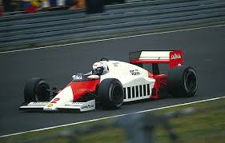

1985

Le più importanti scuderie che hanno partecipato al Campionato Mondiale di Formula 1 nel 1985 erano:
Il Campionato Mondiale di Formula 1 del 1985 è stato vinto dalla scuderia BMW dal pilota Marc Surer
HOME
Tutti i diritti sono riservati
Sito realizzato da Boniotti Elisa, Lucchini Davide, Tassone Thomas